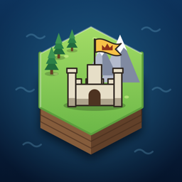

HEXARCH
Build · Trade · Conquer
Hexarch is a turn-based strategy game for iPhone and iPad. Lift the clouds, found your capital and outplay rival civilizations on a hex map with a living economy.
Need help or found a bug?
Open a support request and describe what happened — which device, which screen, and what you expected. Screenshots help a lot.
Contact supportFrequently asked questions
Where are my saved games?
Hexarch saves automatically after every turn. Tap Continue on the
title screen, or Load to pick any saved game.
How do I unlock the Seafarers, Nomads and Machina?
By playing: win one match for the Seafarers, three for the Nomads, and win a match
on Hard or Brutal to unlock the Machina boss. Your progress is shown under
Records.
Rival turns take too long.
Open Settings → Rival turn speed and choose Fast or
Instant. You can also tap Skip during rival turns.
Can I play with friends?
Yes — switch a rival to Human for pass-and-play on one device, or use
Share Match in the game menu to send the match to a friend, who imports
it from the title screen's Load sheet.
Is there anything to buy?
No. Hexarch has no ads and no in-app purchases.